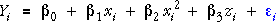

Explaining curvature with a quadratic term in X
A quadratic term can be added to a simple linear model to explain curvature. In a similar way, if curvature is apparent in a plot of residuals against X in the multiple regression model,

then a quadratic term in X can be added to model the curvature,

This model is also a general linear model since it is linear in the parameters.
Note the following properties of this model:
Flexibility of the model
The diagram below shows an ordinary linear model involving X and Z. It corresponds to a regression plane whose corners can be dragged to position it.
Click the checkbox Quadratic in X to add a quadratic term in X to the model. An extra red arrow is added to the diagram. Dragging these four arrows adjusts all four parameters of the model, showing its ability to model curvature in X.
Interpreting parameters (optional)
The diagram below initially shows a model without curvature — the coefficient of x2 is zero.
Drag the three red arrows on the left (but not the red arrow on the left at this stage). These alter the intercept and two slope parameters of the linear model. As before, the slope parameters describe the increase in Y for a unit increase in x or z.
Now drag the red arrow on the far right to change the coefficient of x2 — the curvature in the model. The grey plane describes the model with the same parameters but zero curvature and the wire-frame plane shows the model with curvature. The coefficient of x2 is the difference between the two planes when x = 1.